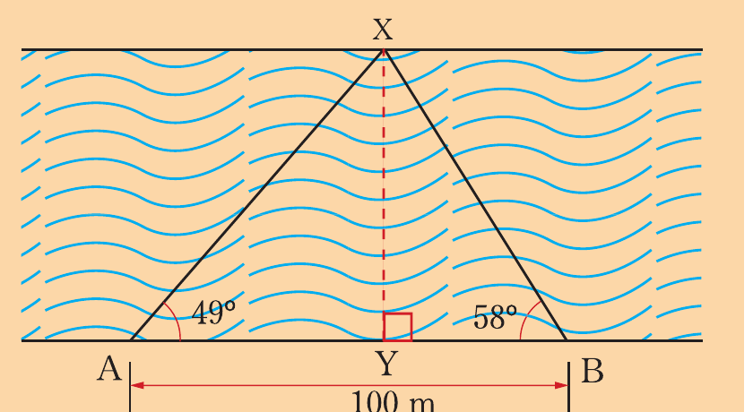
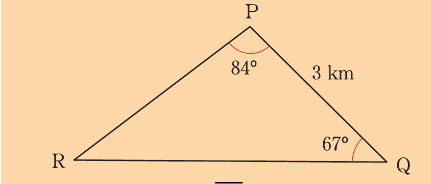
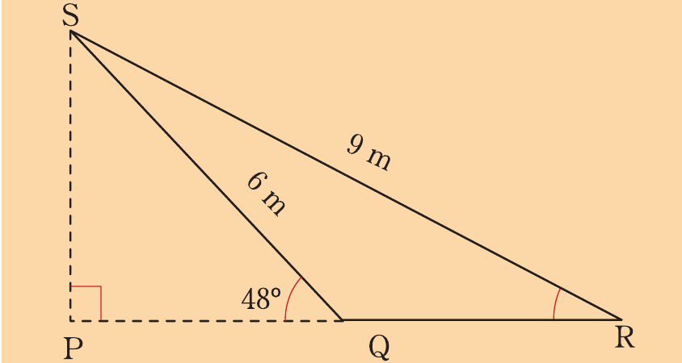

Trigonometry
Find:
(a) the width of the river.
(b) the height of the coconut tree if the angle of elevation of the top of the coconut tree is 22° from A.
(c) the angle of elevation of the top of the coconut tree from B.
(d) the distance from B to the top of the coconut tree.
13. A ladder of length 12 m leans against a vertical wall.
(a) If it makes an angle of 28° with the wall, how far up the wall does it reach?
(b) If it reaches 10 m up the wall, what angle does it make with the horizontal?
14.
Juma notices that the angle of elevation of the top of a mango tree is 32°. Walking 11 metres in a direction towards the tree he observes that the angle of elevation is 45°. Find the height of the tree.
15.
Anna wishes to find the width XY of the river as shown in the following figure.
She measures a distance AB = 100 m along the bank of the river.
She observes that a point X on the other bank of the river is such that XÂB = 49° and X̂BA = 58°.
What width of the river did Anna obtain?

16.
Two boats, A and B are due south of a cliff.
The two boats are 890 m apart.
The angles of elevation at the top of the cliff of the two points A and B are 26°14′ and 17°56′, respectively.
Find the height of the cliff.
17.
A boat at point R is observed from two points P and Q which are 3 km apart as shown in the following figure.
If R̂PQ = 84° and P̂QR = 67°, find:

(a) PR
(b) QR
18.
A railway signal SP is supported by two chains SQ and SR of length 6 m and 9 m, respectively as shown in the following figure.
If the angle of elevation of the top of the signal from point Q is 48°, find:

(a) ŜRQ.
(b) the distance QR.
(c) the height of the signal SP.